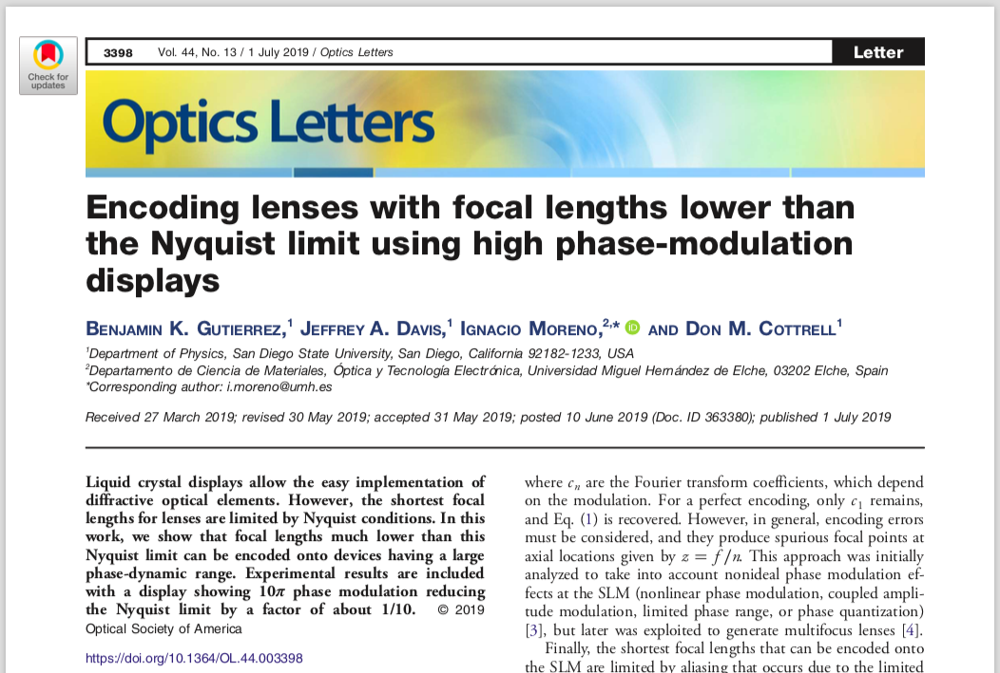
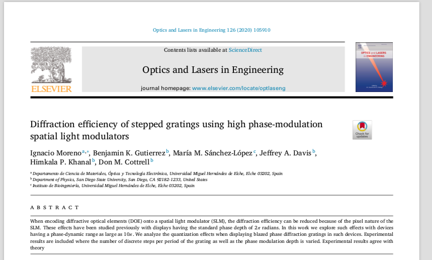

My research has focused on high phase delay spatial light modulators (SLMs) and their use in encoding phase masks which have capabilities beyond that of a standard 2π SLM. This high phase SLM enables a new degree of freedom, the phase depth M. Using this parameter, common phase masks may be augmented to exhibit dynamic abilities. We have demonstrated the use of this new parameter on common phase masks such as diffractive lenses, and diffractive axicons.
 